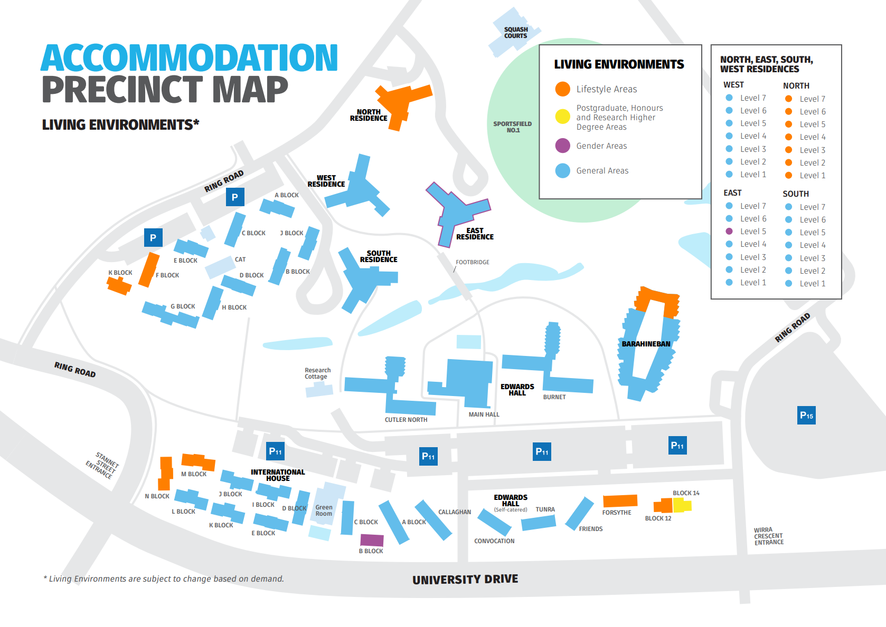
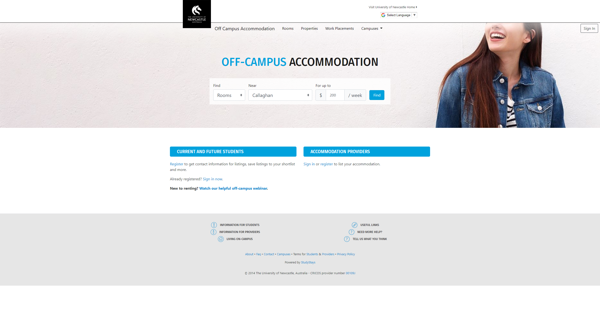
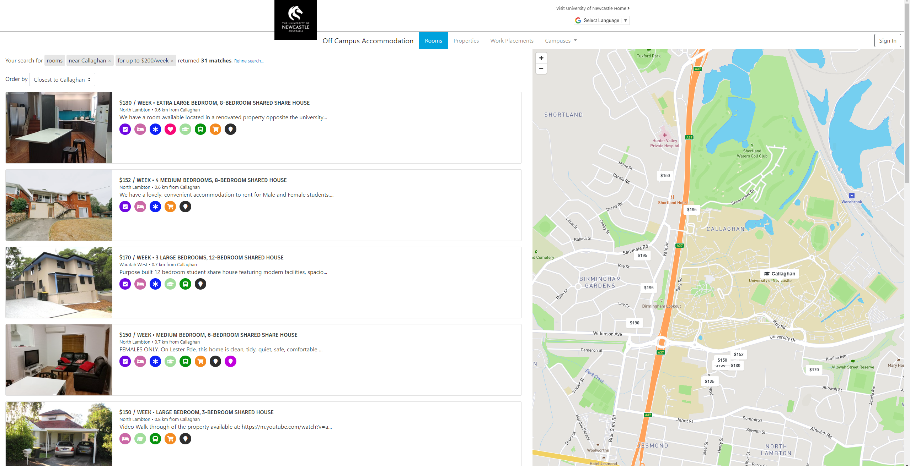

On-Campus

Living on campus is a great choice for students as it allows them close proximity to their studies.
he university offers many ways to support students on-campus and ensure a safe and positive environment Student Living (UoN).
The picture above shows the different residences, there are 8 of them on campus.
You are likely to find the right environment for your needs here, depending on your budget, lifestyle, values and studies. Below are the color code meanings for different areas explained:
- ⬤ Lifestyle areas are for residents who wish to live in a quieter living environment with minimal alcohol usage while still enjoying Student Living activities.
- ⬤ Areas for P, H and RHD for residents who are studying postgraduate, honours or research degrees and are seeking a quieter environment to maximise study time.
- ⬤ Gender areas for residents that wish to live with those of the same gender only. If you live in a Gender area, guests of the opposite gender will not be allowed to stay overnight
- ⬤ General areas for residents who do not wish to select any specific living environment.
Off-Campus (Callaghan)
If you decide to live off-campus, the university has this handy tool to view rooms and housing near the Callaghan campus Off-Campus tool (UoN).

You can look for rooms or houses near the campus and set a certain budget for search criteria. You can see we are looking for a room, near Callaghan and Up to $200/week for rent.

Above, you can see on the right map the different house locations near the campus from our search.
In addition, on the left side you can see the list of houses, their prices, the facilities they include including internet access, near bus station, fully furnished etc.
You can click on the house to see more pictures and even videos of the room or property and means to get in contact.
Temporary
Many international students and some domestic students may require short stay accommodation while looking for something more permanent or other reasons.
You can find out options here Short Stay Accomodation (UoN).
Homestay
Homestay is a great way to learn about Australian culture, practice your English and make new friends.
The University of Newcastle’s Homestay program, established since 1998, offers a safe, affordable and family-oriented accommodation that enables you to live and interact with local families.
Find out what is included in your Homestay and what you can contribute to your family here: Homestay (UoN).